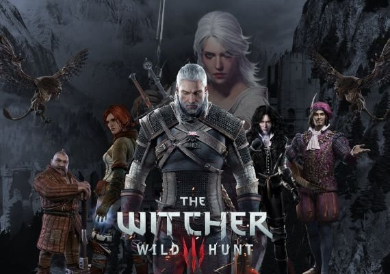
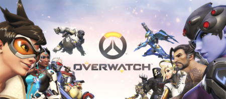
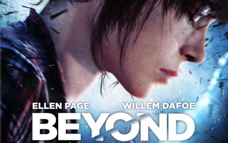
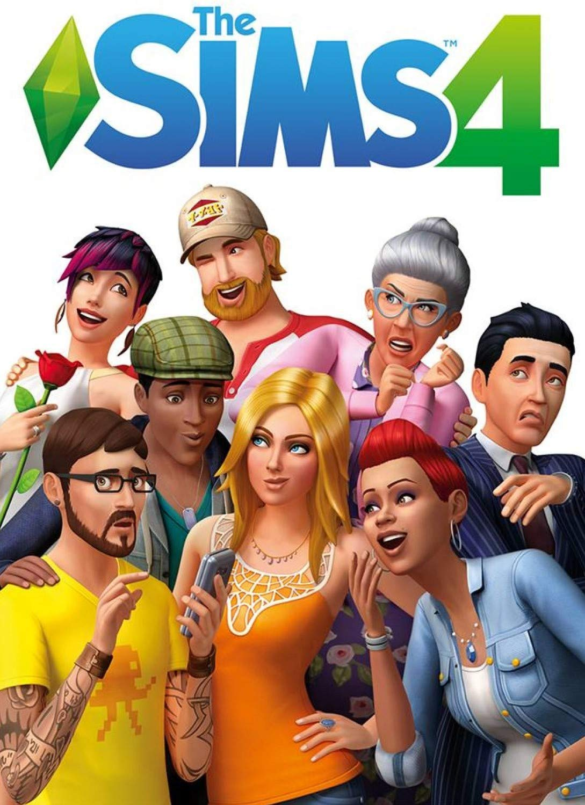

➯ PRESS START 👾
Una de las cosas tan fascinantes sobre los videojuegos es que no importa edad, género o raza, cualquiera puede jugar. Otra de estas cosas es la gran variedad existente, y es por eso que es casi imposible que no exista ninguno que no pueda gustarte. Por esto mismo hablaremos sobre distintos videojuegos para lograr una web heterogénea donde no importe quién la lea ya que encontrará alguna entrada de su interés.
Sin enrrollarnos mucho más, esperamos que disfrutes de los siguientes videojuegos y te animes a probar alguno.
THE WITCHER 3: WILD HUNT
Todo comenzó cuando terminé de ver la serie de `The Witcher´en Netflix, la cual me pareció bastante impresionante y, por ello, decidí informarme más sobre esta saga. Lo mejor vino cuando descubrí que detrás de esta serie existían una saga de libros y de videojuegos. Así, no dudé dos veces y opté empezar la edición GOTY (Game of the Year) de `The Witcher 3: Wild Hunt´ junto a sus dos expansiones `Hearts of Stone´ y `Blood and Wine´.
Sinceramente, tiene unos gráficos bastante buenos que vienen de la mano de un diseño artístico increíble. Además, cuenta con infinidad de escenarios (desde prados y bosques a ciudades y callejuelas). En comparación con anteriores juegos de la saga, ya no es un escenario cerrado, es un mundo abierto inmenso. Y cuando digo inmenso me refiero a INMENSO. Os dejo una comparación con otros juegos para que os hagáis una idea:
Comparación de juegos
| Juego |
Kilómetros cuadrados |
| GTA: San Andreas |
36 km cuadrados |
| Red Dead Redemption |
41 kilómetros cuadrados |
| GTA V |
81 kilómetros cuadrados |
| Far Cry 4 |
46 kilómetros cuadrados |
| Skyrim |
37 kilómetros cuadrados |
| The Witcher 3 |
136 kilómetros cuadrados |
Añadir que el juego fue lanzado el 19 de mayo de 2015. Sí, 2015.
En cuanto a la historia, no importa si no has jugado los anteriores juegos o leído los libros, ya que el inicio nos servirá de guía para la historia y el resto de personajes que nos encontraremos también nos ayudarán a que todo jugador que llegue nuevo a la franquicia pueda disfrutarla por igual (lo que es una gran ventaja). No quiero hablar mucho más ya que lo mejor es vivirlo de tu propia mano pero, completarlo al 100% supone más de 200 horas de juego con 36 finales distintos (hay muchas misiones secundarias, contratos, etc. A parte de historia principal, la cual es muy adictiva y entretenida a la par que emocionante). Además, habrá situaciones que te harán plantearte tu propia moral y qué está bien y qué no. Esto realmente te hace dudar mucho, ya que cada elección supone una variación en la historia y cualquier acción que cometas supondrá unas consecuencias. A veces sólo tienes la posibilidad de elegir el mal menor.
Para terminar, me gustaría comentar la increíble banda sonora, existiendo incluso canciones dentro de la propia historia cuya letra contiene infinidad de `guiños´ hacia la vida de nuestro personaje.
⇒ Adjunto un enlace de la banda sonora del juego, en la descripción se puede ver e ir a cualquier canción: ⇒ ¡Clic aquí! 👈
⇒ Adjunto también un mapa del continente de `The Witcher´ creado por Netflix: ¡Clic aquí! 👈

UNCHARTED 4: EL DESENLACE DEL LADRÓN
Esta es una saga que realmente deberías jugar si te gusta la acción-aventura en tercera persona. Es un juego que te sorprenderá constantemente, en especial por su paisaje, música y diálogos. Hay secuencias increíbles y la trama va a mejor según avanzas. Además, hay una gran atención a los detalles en todos los escenarios y animaciones. También mencionar el modo multijugador, el cual es bastante divertido, a pesar de no ser la atracción principal (y lo mejor de todo es que a día de hoy sigue existiendo gente con la que jugar a este).
Pero todo hay que decirlo, a veces resulta poco intuitivo saber hacia dónde tienes que ir o qué hacer para poder avanzar, y esto puede llegar a frustrarte (pero vamos que es tan sencillo como buscar algún gameplay en YouTube y ver cómo seguir). Otra desventaja es que sólo está disponible para una única plataforma (PlayStation 4) por lo que las personas que no dispongan de esta (aquellos que juegan en PC o Xbox y no vean necesario comprar esta consola) no podrán jugarlo.
Añadir como dato curioso que está planeada una película sobre esta saga para finales de 2020 o 2021, siendo una adaptación de esta exitosa serie de videojuegos creada por Naughty Dog. Descubriremos los detalles de cómo el joven cazarrecompensas Nathan Drake (Tom Holland) llegó conocer a su mentor y amigo Victor Sullivan (Mark Wahlberg).

ANIMAL CROSSING: NEW HORIZONS
Animal Crossing: New Horizons pertenece a la saga de juegos: Animal Crossing, y fue estrenado el 20 de marzo de 2020. Lo bueno de este juego es que nunca deja de sorprenderme, y como jugadora de anteriores entregas como "Wild World", "New Leaf" o "Pocket Camp" he de decir que este nuevo juego tiene grandes mejoras. He de decir que esta saga la empecé a jugar con mi Nintendo DS hace muchísimos años, luego la siguiente entrega para Nintendo 3DS (e incluso el juego para móvil), así que no me lo pensé mucho al ver el tráiler.
Este juego está desarrollado por Nintendo para Nintendo Switch y es un videojuego de simulación social. En este comienzas de cero en una isla desierta donde tendrás que ir consiguiendo distintas cosas (como abrir edificaciones, atraer a nuevos vecinos, etc.) para hacer de ella una isla visitable y popular. Además, nos encontramos con muchas caras familiares de distintas entregas y muchísimas funciones nuevas (como craftear herramientas o la posibilidad de modificar el propio terreno de la isla a tu gusto).
Finalmente añadir que esto da a un nuevo abanico de ideas que hará estimular tu imaginación. Además, ¡siempre puedes buscar ideas de otros jugadores sobre cómo decorar tu isla!

OVERWATCH
Este juego llamado "Overwatch" es un juego multijugador donde hay distintos modos donde jugar. Al principio puede parecer bastante simple, pero en realidad es bastante complejo y una vez lo empiezas a comprender te va gustando más y más (o por lo menos a mí). Es difícil de jugar ya que puedes elegir con qué héroe jugar (actualmente hay 31 héroes) y cada uno tiene sus propias habilidades, `trucos´, ventajas y desventajas. Puedes jugar por años y aún no saber jugar del todo (ya que habrá algunos con los que ni hayas jugado).
Es realmente entretenido ya que van actualizando el juego con distintos eventos, y cada semana (o diariamente) cambian los modos de juego (desde captura la bandera hasta un todos contra todos). También puedes jugar en competitivo e intentar subir de rango. Eso sí, para jugar competitivo debes saber que no puedes utilizar cualquier héroe, ya que antes de entrar a la sala de espera debes elegir con qué tipo de héroe jugar (tanque, daño o apoyo).
Este juego tiene sus ventajas ya que aprendes a jugar en equipo (ya que si vas sólo no harás otra cosa más que morir) y puedes llegar a lograr cosas increíbles como combinar distintos ataques con las habilidades de los héroes elegidos por otros jugadores. Sin embargo, la gran desventaja de este juego desarrollado por Blizzard Entertainment es que si juegas en PlayStation te será requerido el PlayStation Plus, ya que es un juego multijugador y sin este no te deja acceder a las funciones online.
Para acabar, dejo link de la página con todos los personajes, con sus habilidades e historia trasfondo (lore), de las que se hacen cortos en el canal de YouTube de Overwatch: ¡Púlsame! 👈

CALL OF DUTY: WARZONE
Warzone es un modo de juego multijugador dentro de la saga Call of Duty gratuito. Se basa en un combate masivo donde 150 personas deben competir para ser los últimos vivos (Battle Royale). Es el juego perfecto con el que jugar con cualquiera ya que es gratuito y muy entretenido.
Me lo puedo pasar muy bien pero otras veces llega a frustrar bastante. Esto se debe en especial al llamado Gulag. Este es una especie de segunda oportunidad donde vas si mueres, y en este podrás competir con otro jugador que también ha muerto para lograr estar de vuelta en la partida. El objetivo es sencillo: gana quien sobreviva primero. Añadir que también hay otro modo llamado Botín donde debes conseguir 1 millón de dólares antes que los equipos contrarios. Este modo también es realmente entretenido ya que si mueres reapareces (pero pierdes tu dinero si no lo has asegurado).
Por último, otra cosa que me gusta de este juego es la gran variedad de armas existentes y de camuflajes y accesorios que puedes añadir. Desde fusiles a escopetas, francotiradores, pistolas, etc.

BEYOND: TWO SOULS
Este juego realmente llamó mi atención cuando leí su sinopsis y, a día de hoy, es uno de los juegos de historia que realmente me conmovió cuando lo finalicé. Esta historia no la había visto nunca antes, y de verdad pienso que es un juego que debería ser jugado por cualquier persona a la que realmente le guste la acción, el drama y una historia poco frecuente o `cliché´.
El desarrollo de este juego es maravilloso, llevando al jugador por todas las fases de la vida de la protagonista, Jodie. Desde su infancia hasta el fin de la historia (ya bastante crecida). Vivimos y crecemos junto a ella, llevándonos a elegir cómo crecerá y qué decisiones marcarán el final de su historia.
De este juego sólo puedo decir que es una maravilla cinematográfica, con un guión muy elaborado y un desenlace que nos dejará los pelos de punta (en especial una decisión final, y no digo más que es spoiler). Además, creo que es un videojuego apto para todos que da la posibilidad de pasar un gran rato del que no te arrepentirás. Una última cosa es mencionar el maravilloso trabajo hecho en el doblaje al castellano, y si tenéis tiempo para admirarlo, adjuntaré el link al vídeo del tráiler: ¡Púlsame! 👈

LOS SIMS 4
Esta mítica saga era de mis favoritas de pequeña, y este juego es el último que ha sido lanzado. En comparación con Los Sims 3, este es muchísimo mejor y da la posibilidad a crear millones de cosas.
Consiste en crear personajes, casas y básicamente vivir (simulación social). Tienes en tu mano todo lo que quieras crear, tú piensas la historia, la apariencia y los rasgos de cada personaje y qué será o cómo vivirá. Es un juego que saca tu imaginación.
Mi parte favorita del juego desde que empecé a jugar siempre ha sido crear un solar. Siempre me ha gustado dar rienda suelta a mi imaginación y en Los Sims tienes las facilidades necesarias para crear desde un palacio hasta una cabaña pequeñita. Las opciones son ilimitadas y, creo que a veces sólo juego para construir la estructura de la casa o diseñar y decorar habitaciones.
Añadir que también puedes utilizar `mods´ (creaciones de distintos usuarios que suben su trabajo a Internet y puedes utilizar en el juego) tanto de todo aquello referido a estética y moda (peinados, maquillaje, ropa, etc.) interiorismo (cuadros, camas, lámparas...). Es realmente increíble ver el trabajo de estos usuarios, y al final hasta terminas sin jugar ya que has invertido todo tu tiempo en buscar nuevos mods.
Por último añadir que este juego es muy básico, ya que está creado para que compres DLC (contenido descargable o packs de expansión) donde dispones de más artículos dentro del juego según su temática.

Ir arriba